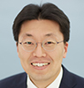
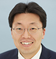
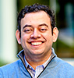
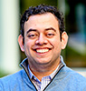

Plenary Lecture
-
Plenary lecture 1: Basic
Day 2, Friday, October 27, 11:15-11:55 / Room 1,2,3(3F)
Overview
-
The brain’s leptin-melanocortin pathway plays a critical role in controlling mammalian food intake, and genetic disruptions and polymorphic variations can influence the distribution of body weight in humans. In this plenary lecture, we will explore new insights regarding the melanocortin signaling cascade, specially focusing how the activation of Rho kinase 1 (ROCK1) in melanocortin-4 receptor (MC4R)-expressing neurons in the paraventricular nucleus affect the regulation of food intake and energy expenditure.
Chairperson : Ja-Hyun Baik (Korea University, Korea)
11:15-11:55
ROCKing role for a hunger signal
Young-Bum Kim (Harvard University, USA)
-
Plenary lecture 2: Adrenal
Day 2, Friday, October 27, 15:25-16:05 / Room 1,2,3(3F)
Overview
-
Dr. Richard J. Auchus is the James A. Shayman and Andrea S. Kevrick Professor of Translational Medicine in the Departments of Pharmacology and Internal Medicine at the University of Michigan, Ann Arbor, USA. He is an Endocrinologist with expertise both in basic, clinical, and translational science. In particular, he is the world’s foremost authority on steroid-related diseases, including congenital adrenal hyperplasia (CAH) and primary aldosteronism. In his plenary lecture, he will address the latest knowledge for new androgens and novel treatments for CAH.
Chairperson : Man Ho Choi (KIST, Korea)
15:25-16:05
New androgens and new treatments for congenital adrenal hyperplasia
Richard J. Auchus (University of Michigan, USA)
-
Plenary lecture 3: Diabetes
Day 3, Saturday, October 28, 10:15-10:55 / Room 1,2,3(3F)
Overview
-
Timothy J. Kieffer has made significant contributions to our understandings of islet and incretin biology. His recent research focuses on stem cell generation and its potential application for insulin replacement, offering valuable insights into a novel therapeutic approach for people living with diabetes. During this plenary lecture, his work on cell replacement to eliminate the dependence on exogenous insulin therapy will be presented.
Chairperson: Kun-Ho Yoon (The Catholic University of Korea, Korea)
10:15-10:55
Cell replacement therapy for diabetes: bench to clinic
Timothy Kieffer (University of British Columbia, Canada)
-
Plenary lecture 4: Thyroid
Day 3, Saturday, October 28, 14:30-15:10 / Room 1,2,3(3F)
Overview
-
Embryonic stem cells (ESCs) are undifferentiated cells that can develop into any type of cell in the human body. Prof. Sabine Costagliola has introduced a method of using mouse ESCs to generate functional thyroid tissue and has extended the method to the use of human ESCs. In this lecture, she will present thyroid organoids derived from human ESCs that produce thyroid hormone and gene regulatory networks associated with thyroid development.
Chairperson : Jae Hoon Chung (Sungkyunkwan University, Korea)
14:30-15:10
Human thyroid organoids derived from pluripotent stem cells to rescue hypothyroidism
Sabine Costagliola (Université libre de Bruxelles, Belgium)
- Plenary lecture 1: Basic Day 2, Friday, October 27, 11:15-11:55 / Room 1,2,3(3F) Overview
-
The brain’s leptin-melanocortin pathway plays a critical role in controlling mammalian food intake, and genetic disruptions and polymorphic variations can influence the distribution of body weight in humans. In this plenary lecture, we will explore new insights regarding the melanocortin signaling cascade, specially focusing how the activation of Rho kinase 1 (ROCK1) in melanocortin-4 receptor (MC4R)-expressing neurons in the paraventricular nucleus affect the regulation of food intake and energy expenditure.
Chairperson : Ja-Hyun Baik (Korea University, Korea)
| 11:15-11:55 | ROCKing role for a hunger signal Young-Bum Kim (Harvard University, USA) |
- Plenary lecture 2: Adrenal Day 2, Friday, October 27, 15:25-16:05 / Room 1,2,3(3F) Overview
-
Dr. Richard J. Auchus is the James A. Shayman and Andrea S. Kevrick Professor of Translational Medicine in the Departments of Pharmacology and Internal Medicine at the University of Michigan, Ann Arbor, USA. He is an Endocrinologist with expertise both in basic, clinical, and translational science. In particular, he is the world’s foremost authority on steroid-related diseases, including congenital adrenal hyperplasia (CAH) and primary aldosteronism. In his plenary lecture, he will address the latest knowledge for new androgens and novel treatments for CAH.
Chairperson : Man Ho Choi (KIST, Korea)
| 15:25-16:05 | New androgens and new treatments for congenital adrenal hyperplasia Richard J. Auchus (University of Michigan, USA) |
- Plenary lecture 3: Diabetes Day 3, Saturday, October 28, 10:15-10:55 / Room 1,2,3(3F) Overview
-
Timothy J. Kieffer has made significant contributions to our understandings of islet and incretin biology. His recent research focuses on stem cell generation and its potential application for insulin replacement, offering valuable insights into a novel therapeutic approach for people living with diabetes. During this plenary lecture, his work on cell replacement to eliminate the dependence on exogenous insulin therapy will be presented.
Chairperson: Kun-Ho Yoon (The Catholic University of Korea, Korea)
| 10:15-10:55 | Cell replacement therapy for diabetes: bench to clinic Timothy Kieffer (University of British Columbia, Canada) |
- Plenary lecture 4: Thyroid Day 3, Saturday, October 28, 14:30-15:10 / Room 1,2,3(3F) Overview
-
Embryonic stem cells (ESCs) are undifferentiated cells that can develop into any type of cell in the human body. Prof. Sabine Costagliola has introduced a method of using mouse ESCs to generate functional thyroid tissue and has extended the method to the use of human ESCs. In this lecture, she will present thyroid organoids derived from human ESCs that produce thyroid hormone and gene regulatory networks associated with thyroid development.
Chairperson : Jae Hoon Chung (Sungkyunkwan University, Korea)
| 14:30-15:10 | Human thyroid organoids derived from pluripotent stem cells to rescue hypothyroidism Sabine Costagliola (Université libre de Bruxelles, Belgium) |
Award lecture
-
Songwon award lecture
Day 2, Friday, October 27, 08:30-09:30 / Room 5(B1)
Chairperson : Bong Soo Cha (Yonsei University, Korea)
08:30-09:00
Multi-omics profiling to predict responsiveness of adjuvant therapy in acromegalic patients
Cheol Ryong Ku (Yonsei University, Korea)

09:00-09:30
TBD
TBD (TBD)
-
Namgok award lecture
Day 2, Friday, October 27, 16:05-16:35 / Room 1,2,3(3F)
Chairperson : Kyong Soo Park (Seoul National University, Korea)

16:05-16:35
TBD
TBD (TBD)
- Songwon award lecture Day 2, Friday, October 27, 08:30-09:30 / Room 5(B1)
Chairperson : Bong Soo Cha (Yonsei University, Korea)
| 08:30-09:00 | Multi-omics profiling to predict responsiveness of adjuvant therapy in acromegalic patients Cheol Ryong Ku (Yonsei University, Korea) | |
|
|
09:00-09:30 | TBD TBD (TBD) |
- Namgok award lecture Day 2, Friday, October 27, 16:05-16:35 / Room 1,2,3(3F)
Chairperson : Kyong Soo Park (Seoul National University, Korea)
|
|
16:05-16:35 | TBD TBD (TBD) |
Joint symposium
- US ENDO-KES joint symposium: Latest perspectives and advancements in thyroid Day 2, Friday, October 27, 13:40-15:10 / Room 2(3F) Overview
-
The ENDO-KES joint symposium will highlight the latest perspectives and advancements in the field of thyroid. Prof. Trevor Angell, a co-author of the upcoming American Thyroid Association guidelines, will provide insights into the US perspective on molecular testing for thyroid nodules. Prof. Melissa Lechner, a physician scientist specializing in cancer immunotherapy and immune-related adverse events, will present immune and genetic biomarkers for predicting responses in thyroid cancer patients. Additionally, Prof. Young Joo Park, a renowned thyroid expert in Korea, will discuss the therapeutic target of tumor microenvironment in advanced thyroid cancer.
Chairpersons : Stephen R. Hammes (University of Rochester, USA), Tae Yong Kim (University of Ulsan, Korea)
| 13:40-14:10 | United States perspective on molecular testing of thyroid nodules Trevor E. Angell (University of Southern California, USA) | |
| 14:10-14:40 | Immune and genetic biomarkers for predicting response in thyroid cancer patients Melissa G. Lechner (University of California Los Angeles, USA) | |
| 14:40-15:10 | Tumor microenvironment as a therapeutic target of advanced thyroid cancer Young Joo Park(Seoul National University, Korea) |
- ESA-KES joint symposium: Pituitary and adrenal frontiers Day 2, Friday, October 27, 16:50-18:20 / Room 4(3F) Overview
-
The ESA-KES joint symposium will showcase experts discussing the latest advancements in the field of pituitary and adrenal glands. Topics covered will include the new classification of pituitary tumors and its clinical application, presented by Prof. Nèle Lenders. Additionally, Prof. Jun Yang and Prof. Jung Soo Lim will provide valuable insights into primary hyperaldosteronism from both research and clinical perspectives. This symposium presents a unique opportunity to explore the forefront of pituitary and adrenal disorders.
Chairpersons : Ann McCormack (University of New South Wales, Australia ), Min-Seon Kim (University of Ulsan, Korea)
| 16:50-17:20 | The role of histological type, proliferation and invasion in pituitary tumor classification and prognostication Nèle Lenders (Garvan Institute of Medical Research, Australia) | |
| 17:20-17:50 | Research and service development in primary aldosteronism Jun Yang (Monash University, Australia) | |
| 17:50-18:20 | Update on the pathogenesis of primary aldosteronism: focusing on APA-related genes Jung Soo Lim (Yonsei University, Korea) |
- JES-KES joint symposium: Updates on incretin-based treatment in metabolic diseases; from basics to clinical trials Day 3, Saturday, October 28, 08:30-10:00 / Room 1(3F) Overview
-
The JES-KES joint symposium consists of lectures covering the basics and clinical trials of incretin-based treatment in metabolic diseases such as diabetes, fatty liver, and obesity. Prof. Tadahiro Kitamura from Gunma University will be presenting on the advancements in glucagon measurement methods and their clinical usefulness. Prof. Jaemin Lee of DGIST will present the incretin signaling in diabetes and Prof. Arihiro Kiyosue of Moriyama Memorial Hospital in Japan, will share his experiences of clinical trials on a GIP/GLP-1 dual agonist in diabetes. Prof. Yong-ho Lee of Yonsei University will give a lecture on the effects of incretin treatment in non-alcoholic fatty liver disease.
Chairpersons : Young Min Cho (Seoul National University, Korea), Sihoon Lee (Gachon University, Korea)
| 08:30-08:50 | Development of the most accurate glucagon sandwich ELISA and its usefulness for clinical examination Tadahiro Kitamura (Gunma University, Japan) | |
| 08:50-09:10 | ER stress and its associated signaling modulate incretin receptor signaling Jaemin Lee (DGIST, Korea) | |

|
09:10-09:30 | GIP/GLP-1 dual agonist in type 2 diabetes Arihiro Kiyosue (Moriyama Memorial Hospital, Japan) |
| 09:30-09:50 | A GLP-1/GLP-2 dual agonist in NASH Yong-ho Lee (Yonsei University, Korea) | |
|
|
09:50-10:00 | Discussion |
- ESE-KES joint symposium: Conquering rare parathyroid diseases through consortiums of collective intelligence Day 3, Saturday, October 28, 11:10-12:40 / Room 3(3F) Overview
-
The subject of the ESE-KES joint symposium is parathyroid glands. On behalf of the European Consortium for the study of PHP (EuroPHP), Prof. Giovanna Mantovani of Milan University in Italy will present the updates of pseudohypoparathyroidism (PHP), and Prof. Lars Rejnmark of Aarhus University in Denmark will present a new treatment for hypoparathyroidism. Prof. Sung Hye Kong of Seoul National University will share the results of recent proteomics research conducted through a Korean consortium for the study of parathyroid cancer.
Chairpersons : Jérôme Bertherat ( Paris Descartes University, France), Dong Jin Chung (Chonnam National University, Korea)
| 11:10-11:40 | Pseudohypoparathyroidism and related disorders: lessons from the European Network Giovanna Mantovani (University of Milan, Italy) | |
| 11:40-12:10 | Hypoparathyroidism and PTH treatment Lars Rejnmark (Aarhus University, Denmark) | |
| 12:10-12:40 | Proteomics approach to understand parathyroid diseases Sung Hye Kong (Seoul National University, Korea) |
- KDA-KES joint symposium(K): Let's build up hope for future generations Day 3, Saturday, October 28, 11:10-12:40 / Room 5(B1) Overview
-
The decreasing interest in Endocrinology among young professionals is raising concerns about a potential crisis, as it could lead to a shortage of resources for education, research, and patient care. In response to this pressing issue, the Korean Endocrine Society has taken the initiative to establish the “Committee for Future Endocrinologists Sustainability”. To address this matter collaboratively, a joint session will be held involving the Korean Endocrine Society and the Korean Diabetes Association to explore potential remedies, with the ultimate goal of fostering better understanding and cooperation in overcoming this challenge.
Chairpersons : Kyoil Suh (Soonchunghayang University, Korea), Yoon-Sok Chung (Ajou University, Korea)
| 11:10-11:30 | Our role in sustainable endocrinology for the future Jeonghoon Ha (The Catholic University of Korea, Korea) | |
| 11:30-11:50 | What are our problems and what are the solutions? Young-Sang Lyu (Chosun University, Korea) |
| Discussion | ||
|---|---|---|
| 11:50-12:40 | Dae-Jeong Koo (Changwon Fatima Hospital, Korea) | |
| Nam Hoon Kim (Korea University, Korea) | ||
| Dughyun Choi (Soonchunhyang University, Korea) | ||
| Dong-Hwa Lee (Chungbuk National University, Korea) | ||
| Jinsun Jang (Seoul National University, Korea) | ||
Special interest group
-
Special interest group 1: Insightful approach on QoL in thyroid diseases
Day 1, Thursday, October 26, 16:30-18:00 / Room 3(3F)
Overview
-
As the prevalence of thyroid disease continues to increase, there is a growing interest in studying long-term health outcomes after treatment. With the advent of big data research techniques in recent years, evidences regarding risks, costs, and benefits is being gathered in a more objective and statistical manner. In this session, Anna M. Sawka from the University of Toronto, Canada, who is the editor-in-chief of Thyroid journal, Prof. Mijin Kim from Pusan National University and Prof. Kyeong Jin Kim from Korea University, will deliver lectures and engage in discussions on various issues concerning the quality of life for patients with thyroid disease.
Chairpersons : Ho-Cheol Kang (Chonnam National University, Korea), Dong Yeob Shin (Yonsei University, Korea)
16:30-17:00
Consideration of quality of life in thyroid cancer
Anna M. Sawka (University of Toronto, Canada)
17:00-17:30
Economic burden for thyroid cancer patients in Korea
Mijin Kim (Pusan National University, Korea)
17:30-18:00
Post-RAI health outcome in thyroid diseases
Kyeong Jin Kim (Korea University, Korea)
-
Special interest group 2: Efforts from the fundamental to the control of senescence
Day 1, Thursday, October 26, 16:30-18:00 / Room 4(3F)
Overview
-
In this session, experts on aging and endocrine function research will review and discuss the latest research findings on ‘senoinflamation’, which is drawing attention as a mechanism of metabolic dysfunction in aging, as well as ‘senolysis’, a hypothesis to prevent aging by removing aging cells and medications having anti-senescence effects.
Chairpersons : Hak Chul Jang (Seoul National University, Korea), Mi-Kyung Kim (Inje University, Korea)
16:30-17:00
Senoinflammation as the basis of pathophysiological senescence and its potential intervention
Hae Young Chung (Pusan National University, Korea)
17:00-17:30
Tumorigenic roles of senescent cells in the cancer microenvironment
Akiko Takahashi (Japanese Foundation for Cancer Research, Japan)
17:30-18:00
Clinically available medications that possess anti-senescence efficacies
Jeong-hyun Park (Inje University, Korea)
-
Special interest group 3: Multifaceted roles of hypothalamus in human health
Day 1, Thursday, October 26, 16:30-18:00 / Rube & Jade(3F)
Overview
-
We delve into the multifaceted roles and impacts of the hypothalamus in human health. Dr. Minsoo Kim from the Korea Institute of Science and Technology (KIST) will enlighten us on the interplay between hypothalamic aging or inflammation and its consequences. Prof. Obin Kwon from Seoul National University will demonstrate the impact of the hypothalamic estrogen receptor on energy metabolism through AgRP neurons. Lastly, Prof. Seung Shin Park from Seoul National University is set to present on the subtypes of hypothalamic obesity and the corresponding effects of GLP-1RA. This session will broaden your understanding of the intricate workings of the hypothalamus and its integral role in maintaining bodily functions and overall health. In this session, experts on aging and endocrine function research will review and discuss the latest research findings on ‘senoinflamation’, which is drawing attention as a mechanism of metabolic dysfunction in aging, as well as ‘senolysis’, a hypothesis to prevent aging by removing aging cells and medications having anti-senescence effects.
Chairpersons : Sunjip Yu (The Catholic University of Korea, Korea), Kyungjin Kim (DGIST, Korea)
16:30-16:50
Hypothalamic cytokines in metabolic syndrome
Min Soo Kim (KIST, Korea)
16:50-17:10
Role of GPER in AgRP neurons on energy balance
Obin Kwon (Seoul National University, Korea)
17:10-17:30
Hypothalamic obesity: subtyping and the role of GLP-1 receptor agnonist
Seung Shin Park (Seoul National University, Korea)
Discussion
17:30-18:00
Hyung jin choi (Seoul National University, Korea)
Chan Hee Lee (Hallym University, Korea)
Yoon A Hwang (Yonsei University, Korea)
- Special interest group 1: Insightful approach on QoL in thyroid diseases Day 1, Thursday, October 26, 16:30-18:00 / Room 3(3F) Overview
-
As the prevalence of thyroid disease continues to increase, there is a growing interest in studying long-term health outcomes after treatment. With the advent of big data research techniques in recent years, evidences regarding risks, costs, and benefits is being gathered in a more objective and statistical manner. In this session, Anna M. Sawka from the University of Toronto, Canada, who is the editor-in-chief of Thyroid journal, Prof. Mijin Kim from Pusan National University and Prof. Kyeong Jin Kim from Korea University, will deliver lectures and engage in discussions on various issues concerning the quality of life for patients with thyroid disease.
Chairpersons : Ho-Cheol Kang (Chonnam National University, Korea), Dong Yeob Shin (Yonsei University, Korea)
| 16:30-17:00 | Consideration of quality of life in thyroid cancer Anna M. Sawka (University of Toronto, Canada) | |
| 17:00-17:30 | Economic burden for thyroid cancer patients in Korea Mijin Kim (Pusan National University, Korea) | |
| 17:30-18:00 | Post-RAI health outcome in thyroid diseases Kyeong Jin Kim (Korea University, Korea) |
- Special interest group 2: Efforts from the fundamental to the control of senescence Day 1, Thursday, October 26, 16:30-18:00 / Room 4(3F) Overview
-
In this session, experts on aging and endocrine function research will review and discuss the latest research findings on ‘senoinflamation’, which is drawing attention as a mechanism of metabolic dysfunction in aging, as well as ‘senolysis’, a hypothesis to prevent aging by removing aging cells and medications having anti-senescence effects.
Chairpersons : Hak Chul Jang (Seoul National University, Korea), Mi-Kyung Kim (Inje University, Korea)
| 16:30-17:00 | Senoinflammation as the basis of pathophysiological senescence and its potential intervention Hae Young Chung (Pusan National University, Korea) | |
| 17:00-17:30 | Tumorigenic roles of senescent cells in the cancer microenvironment Akiko Takahashi (Japanese Foundation for Cancer Research, Japan) | |
| 17:30-18:00 | Clinically available medications that possess anti-senescence efficacies Jeong-hyun Park (Inje University, Korea) |
- Special interest group 3: Multifaceted roles of hypothalamus in human health Day 1, Thursday, October 26, 16:30-18:00 / Rube & Jade(3F) Overview
-
We delve into the multifaceted roles and impacts of the hypothalamus in human health. Dr. Minsoo Kim from the Korea Institute of Science and Technology (KIST) will enlighten us on the interplay between hypothalamic aging or inflammation and its consequences. Prof. Obin Kwon from Seoul National University will demonstrate the impact of the hypothalamic estrogen receptor on energy metabolism through AgRP neurons. Lastly, Prof. Seung Shin Park from Seoul National University is set to present on the subtypes of hypothalamic obesity and the corresponding effects of GLP-1RA. This session will broaden your understanding of the intricate workings of the hypothalamus and its integral role in maintaining bodily functions and overall health. In this session, experts on aging and endocrine function research will review and discuss the latest research findings on ‘senoinflamation’, which is drawing attention as a mechanism of metabolic dysfunction in aging, as well as ‘senolysis’, a hypothesis to prevent aging by removing aging cells and medications having anti-senescence effects.
Chairpersons : Sunjip Yu (The Catholic University of Korea, Korea), Kyungjin Kim (DGIST, Korea)
| 16:30-16:50 | Hypothalamic cytokines in metabolic syndrome Min Soo Kim (KIST, Korea) | |
| 16:50-17:10 | Role of GPER in AgRP neurons on energy balance Obin Kwon (Seoul National University, Korea) | |
| 17:10-17:30 | Hypothalamic obesity: subtyping and the role of GLP-1 receptor agnonist Seung Shin Park (Seoul National University, Korea) |
| Discussion | ||
|---|---|---|
| 17:30-18:00 | Hyung jin choi (Seoul National University, Korea) | |
| Chan Hee Lee (Hallym University, Korea) | ||
| Yoon A Hwang (Yonsei University, Korea) | ||
Special session
-
The hormone health foundation(K): Aspiration of KES for a better world
Day 2, Friday, October 27, 09:30-10:00 / Room 5(B1)
09:30-09:40
Social responsibility of KES: Why it's so important and how to do it right
Sin Gon Kim (Korea University, Korea)
09:40-09:50
The first steps of the KES: the Hormone Health Foundation
Yumie Rhee (Yonsei University, Korea)

09:50-10:00
Discussion
-
What we learned from big cohort studies in Korea
Day 2, Friday, October 27, 16:50-18:20 / Room 3(3F)
Overview
-
There has been an increasing interest in a large-scale cohort study that offers access to extensive biomedical resources. This session will present cohort studies conducted in Korea, providing valuable insights into unraveling the causes of metabolic diseases. Prof. Ji Hee Yu will discuss the relationship between cognitive function and metabolic syndrome. Prof. Soo Heon Kwak and Eu Jeong Ku will explore the pathophysiology of diabetes.
Chairpersons : Nam Han Cho (Ajou University, Korea), Nan Hee Kim (Korea University, Korea)
16:50-17:20
Metabolic syndrome and cognitive decline in elderly people
Ji Hee Yu (Korea University, Korea)

17:20-17:50
Genetic and epigenetic landscape of diabetes
Soo Heon Kwak (Seoul National University, Korea)
17:50-18:20
Cytokines and the risk of incident diabetes
Eu Jeong Ku (Seoul National University, Korea)
-
Early career forum: Shaping tomorrow's endocrinology
Day 2, Friday, October 27, 16:50-18:20 / Room 5(B1)
Overview
-
The Early Career Forum is being introduced for the first time, offering a dedicated session for young researchers who have recently entered the field of endocrinology. These early-career researchers, with a specialization in endocrinology, will have the chance to present and share their ongoing research. What makes this forum unique is that it is not only open to domestic young researchers but also extends invitations to speakers from Japan and Taiwan, providing an inclusive platform for emerging researchers from across Asia to expand their research network.
Chairpersons : Feng-Hsuan Liu (Chang Gung University, Taiwan), Je-Yong Choi (Kyungpook National University, Korea)
16:50-17:10
Becoming an interventional endocrinologist - my clinical journey
Wai-Kin Chan (Chang Gung University, Taiwan)
17:10-17:30
Endocrine-disrupting chemicals in Korea: from bench to bedside
Seung Min Chung (Yeungnam University, Korea)
17:30-17:50
Toward endocrine organ regeneration using pluripotent stem cells
Mayuko Kano (St. Marianna University School of Medicine, Japan)
17:50-18:10
Sympathetic nervous system modulation: role of MC4R and GFRAL
Sang-Hyeon Ju (Chungnam National Universtiy, Korea)
Discussion
18:10-18:20
Wonsuk Choi (Chonnam National University, Korea)
-
Global endocrine summit
Day 3, Saturday, October 28, 08:30-10:00 / Room 3(3F)
Overview
-
During the upcoming SICEM 2023, we are excited to host a remarkable session that brings together presidents from international societies. Prof. Stephen R. Hammes, the president of the Endocrine Society, will present his latest research on the role of estradiol in lymphangioleiomyomatosis. Joining us, Prof. Jérôme Bertherat, the president of the European Society of Endocrinology, will provide a comprehensive analysis of adrenal tumor classification, exploring it from both genetic and clinical perspectives. Additionally, president Prof. Feng-Hsuan Liu from Taiwan will shed -light on the current and future advancements of artificial intelligence. This event presents a unique and unforgettable opportunity to gain insights from these esteemed experts, all in one gathering.
Chairpersons : Marjorie Ramos (St Lukes Medical Center, Philippine), Ja-Hyun Baik (Korea University, Korea)
08:30-09:00
Lymphangioleiomyomatosis: the ‘other’ hormone-sensitive cancer
Stephen R. Hammes (University of Rochester, USA)
09:00-09:30
Classification of adrenocortical tumors: from genomics to clinics
Jérôme Bertherat (Paris Descartes University, France)
09:30-10:00
Artificial intelligence: wisdom and challenge, Taiwan experience
Feng Hsuan Liu (Chang Gung University, Taiwan)
-
EnM session: Evidence-based management of low-and intermediate-risk thyroid cancer
Day 3, Saturday, October 28, 11:10-12:40 / Room 2(3F)
Overview
-
Endocrinology and Metabolism (EnM) is the official journal of the Korean Endocrine Society and a leading journal in the field of endocrinology in the Asia-Pacific region. In the EnM session, we would like to discuss the topic of 'treatment option of low-risk thyroid cancer'. Prof. Yoo Hyung Kim from Seoul National University will present the usefulness of suppressing thyroid stimulating hormone target levels after thyroid lobectomy in low- and intermediate-risk thyroid cancer patients, and Prof. Eun Kyung Lee from the National Cancer Center will present the results of a study comparing the efficacy of radioactive iodine treatment in low- and intermediate-risk thyroid cancer patients. Prof. Won Gu Kim from Ulsan University will present a Korean multicenter prospective cohort study on active surveillance or surgery in patients with thyroid microcarcinoma. Finally, Prof. Anna M. Sawka from the University of Toronto will discuss the evidence for active surveillance in low-risk thyroid cancer.
Chairpersons : Won-Young Lee (Sungkyunkwan University, Korea), Young Joo Park (Seoul National University, Korea)
11:10-11:25
TSH suppression after lobectomy in low-to-intermediate risk thyroid cancer: MASTER study
Yoo Hyung Kim (Seoul National University, Korea)
11:25-11:40
Impact of radioactive iodine treatment in thyroid cancer: MOREthyroid study
Eun Kyung Lee (National Cancer Center, Korea)
11:40-11:55
Active surveillance or surgery in papillary thyroid microcarcinoma
Won Gu Kim (University of Ulsan, Korea)
11:55-12:20
Evolution of evidence on active surveillance of small, low risk papillary thyroid cancer
Anna M. Sawka (University of Toronto, Canada)
Discussion
12:20-12:40
Dong-Jun Lim (The Catholic University of Korea, Korea)
-
Endocrine quiz
Day 3, Saturday, October 28, 14:10-14:30 / Room 1,2,3(3F)
14:10-14:30
Endocrine quiz
Jong Chul Won (Inje University, Korea)
14:10-14:30
Endocrine quiz
Jin Hwa Kim (Chosun University, Korea)
-
Year in review
Day 3, Saturday, October 28, 15:10-16:10 / Room 1,2,3(3F)
Overview
-
This session will showcase a review of the past year's extraordinary advancements in diabetes/obesity/lipid, thyroid diseases, and bone and mineral metabolism, as interpreted by our distinguished speakers: Prof. Soo Lim, Prof. Won Bae Kim, and Prof. Yumie Rhee. These esteemed experts, each recognized in their fields, will illuminate our understandings with their deep insights, presenting an engaging narrative of the transformative strides in endocrinology this year.
Chairperson : Eun Jig Lee (Yonsei University, Korea)
15:10-15:30
Diabetes
Soo Lim (Seoul National University, Korea)
15:30-15:50
Thyroid
Won Bae Kim (University of Ulsan, Korea)
15:50-16:10
Bone
Yumie Rhee (Yonsei University, Korea)
- The hormone health foundation(K): Aspiration of KES for a better world Day 2, Friday, October 27, 09:30-10:00 / Room 5(B1)
| 09:30-09:40 | Social responsibility of KES: Why it's so important and how to do it right Sin Gon Kim (Korea University, Korea) | |
| 09:40-09:50 | The first steps of the KES: the Hormone Health Foundation Yumie Rhee (Yonsei University, Korea) | |
|
|
09:50-10:00 | Discussion |
- What we learned from big cohort studies in Korea Day 2, Friday, October 27, 16:50-18:20 / Room 3(3F) Overview
-
There has been an increasing interest in a large-scale cohort study that offers access to extensive biomedical resources. This session will present cohort studies conducted in Korea, providing valuable insights into unraveling the causes of metabolic diseases. Prof. Ji Hee Yu will discuss the relationship between cognitive function and metabolic syndrome. Prof. Soo Heon Kwak and Eu Jeong Ku will explore the pathophysiology of diabetes.
Chairpersons : Nam Han Cho (Ajou University, Korea), Nan Hee Kim (Korea University, Korea)
| 16:50-17:20 | Metabolic syndrome and cognitive decline in elderly people Ji Hee Yu (Korea University, Korea) | |
|  | 17:20-17:50 | Genetic and epigenetic landscape of diabetes Soo Heon Kwak (Seoul National University, Korea) |
| 17:50-18:20 | Cytokines and the risk of incident diabetes Eu Jeong Ku (Seoul National University, Korea) |
- Early career forum: Shaping tomorrow's endocrinology Day 2, Friday, October 27, 16:50-18:20 / Room 5(B1) Overview
-
The Early Career Forum is being introduced for the first time, offering a dedicated session for young researchers who have recently entered the field of endocrinology. These early-career researchers, with a specialization in endocrinology, will have the chance to present and share their ongoing research. What makes this forum unique is that it is not only open to domestic young researchers but also extends invitations to speakers from Japan and Taiwan, providing an inclusive platform for emerging researchers from across Asia to expand their research network.
Chairpersons : Feng-Hsuan Liu (Chang Gung University, Taiwan), Je-Yong Choi (Kyungpook National University, Korea)
| 16:50-17:10 | Becoming an interventional endocrinologist - my clinical journey Wai-Kin Chan (Chang Gung University, Taiwan) | |
| 17:10-17:30 | Endocrine-disrupting chemicals in Korea: from bench to bedside Seung Min Chung (Yeungnam University, Korea) | |
| 17:30-17:50 | Toward endocrine organ regeneration using pluripotent stem cells Mayuko Kano (St. Marianna University School of Medicine, Japan) | |
| 17:50-18:10 | Sympathetic nervous system modulation: role of MC4R and GFRAL Sang-Hyeon Ju (Chungnam National Universtiy, Korea) |
| Discussion | ||
|---|---|---|
| 18:10-18:20 | Wonsuk Choi (Chonnam National University, Korea) | |
- Global endocrine summit Day 3, Saturday, October 28, 08:30-10:00 / Room 3(3F) Overview
-
During the upcoming SICEM 2023, we are excited to host a remarkable session that brings together presidents from international societies. Prof. Stephen R. Hammes, the president of the Endocrine Society, will present his latest research on the role of estradiol in lymphangioleiomyomatosis. Joining us, Prof. Jérôme Bertherat, the president of the European Society of Endocrinology, will provide a comprehensive analysis of adrenal tumor classification, exploring it from both genetic and clinical perspectives. Additionally, president Prof. Feng-Hsuan Liu from Taiwan will shed -light on the current and future advancements of artificial intelligence. This event presents a unique and unforgettable opportunity to gain insights from these esteemed experts, all in one gathering.
Chairpersons : Marjorie Ramos (St Lukes Medical Center, Philippine), Ja-Hyun Baik (Korea University, Korea)
| 08:30-09:00 | Lymphangioleiomyomatosis: the ‘other’ hormone-sensitive cancer Stephen R. Hammes (University of Rochester, USA) | |
| 09:00-09:30 | Classification of adrenocortical tumors: from genomics to clinics Jérôme Bertherat (Paris Descartes University, France) | |
| 09:30-10:00 | Artificial intelligence: wisdom and challenge, Taiwan experience Feng Hsuan Liu (Chang Gung University, Taiwan) |
- EnM session: Evidence-based management of low-and intermediate-risk thyroid cancer Day 3, Saturday, October 28, 11:10-12:40 / Room 2(3F) Overview
-
Endocrinology and Metabolism (EnM) is the official journal of the Korean Endocrine Society and a leading journal in the field of endocrinology in the Asia-Pacific region. In the EnM session, we would like to discuss the topic of 'treatment option of low-risk thyroid cancer'. Prof. Yoo Hyung Kim from Seoul National University will present the usefulness of suppressing thyroid stimulating hormone target levels after thyroid lobectomy in low- and intermediate-risk thyroid cancer patients, and Prof. Eun Kyung Lee from the National Cancer Center will present the results of a study comparing the efficacy of radioactive iodine treatment in low- and intermediate-risk thyroid cancer patients. Prof. Won Gu Kim from Ulsan University will present a Korean multicenter prospective cohort study on active surveillance or surgery in patients with thyroid microcarcinoma. Finally, Prof. Anna M. Sawka from the University of Toronto will discuss the evidence for active surveillance in low-risk thyroid cancer.
Chairpersons : Won-Young Lee (Sungkyunkwan University, Korea), Young Joo Park (Seoul National University, Korea)
| 11:10-11:25 | TSH suppression after lobectomy in low-to-intermediate risk thyroid cancer: MASTER study Yoo Hyung Kim (Seoul National University, Korea) | |
| 11:25-11:40 | Impact of radioactive iodine treatment in thyroid cancer: MOREthyroid study Eun Kyung Lee (National Cancer Center, Korea) | |
| 11:40-11:55 | Active surveillance or surgery in papillary thyroid microcarcinoma Won Gu Kim (University of Ulsan, Korea) | |
| 11:55-12:20 | Evolution of evidence on active surveillance of small, low risk papillary thyroid cancer Anna M. Sawka (University of Toronto, Canada) |
| Discussion | ||
|---|---|---|
| 12:20-12:40 | Dong-Jun Lim (The Catholic University of Korea, Korea) | |
- Endocrine quiz Day 3, Saturday, October 28, 14:10-14:30 / Room 1,2,3(3F)
| 14:10-14:30 | Endocrine quiz Jong Chul Won (Inje University, Korea) | |
| 14:10-14:30 | Endocrine quiz Jin Hwa Kim (Chosun University, Korea) |
- Year in review Day 3, Saturday, October 28, 15:10-16:10 / Room 1,2,3(3F) Overview
-
This session will showcase a review of the past year's extraordinary advancements in diabetes/obesity/lipid, thyroid diseases, and bone and mineral metabolism, as interpreted by our distinguished speakers: Prof. Soo Lim, Prof. Won Bae Kim, and Prof. Yumie Rhee. These esteemed experts, each recognized in their fields, will illuminate our understandings with their deep insights, presenting an engaging narrative of the transformative strides in endocrinology this year.
Chairperson : Eun Jig Lee (Yonsei University, Korea)
| 15:10-15:30 | Diabetes Soo Lim (Seoul National University, Korea) | |
| 15:30-15:50 | Thyroid Won Bae Kim (University of Ulsan, Korea) | |
| 15:50-16:10 | Bone Yumie Rhee (Yonsei University, Korea) |
Breakfast/Luncheon symposium
-
Breakfast symposium 1 [BI-LLY] & [Yuhan]
Day 3, Saturday, October 28, 07:30-08:00 / Room 1(3F)
Chairpersons : Ho-Sang Shon (Catholic Univeristy of Daegu, Korea), Tae Keun Oh (Chungbuk University, Korea)
07:30-07:45
Treatment of type 2 diabetic patients with Empagliflozin, considering heart failure
Jae-Han Jeon (Kyungpook National University, Korea)
07:45-08:00
The future role of DPP-4 inhibitor in patients with type 2 diabetes
Jang Won Son (The Catholic University of Korea, Korea)
-
Breakfast symposium 2 [Chong Kun Dang Pharm] & [Viatris]
Day 3, Saturday, October 28, 07:30-08:00 / Room 2(3F)
Chairpersons : Dae Jung Kim (Ajou University, Korea), TBD (TBD)
07:30-07:45
Efficacy and safety of thiazolidinedione and DPP-4 inhibitor combination therapy
Hwiseung Kim (Chung-Ang University, Korea)
07:45-08:00
Statin for the CV prevention in DM patients focusing on 3 points: guidelines, evidences, differences
Shinae Kang (Yonsei University, Korea)
-
Breakfast symposium 3 [Boryung] & [HK inno.N]
Day 3, Saturday, October 28, 07:30-08:00 / Room 3(3F)
Chairpersons : TBD (TBD), Hyeong-Kyu Park (Soonchunhyang University, Korea)
07:30-07:45
Thiazolidinedione and SGLT2 inhibitor: a rational combination based on type 2 diabetes pathophysiology
Sang Young Kim (Chosun University, Korea)
07:45-08:00
Sarpogrelate: PAD symptom improvement for diabetic patient
Hyuk-Sang Kwon (The Catholic University of Korea, Korea)
-
Luncheon symposium 1 [Chong Kun Dang Pharm] & [Amgen]
Day 2, Friday, October 27, 12:10-12:40 / Room 1(3F)
Chairpersons : Hong Kyu Lee (Seoul National University, Korea), TBD (TBD)
12:10-12:25
Cardio-renal benefit of SGLT2 inhibitor in type 2 diabetes & combination therapy with thiazolidinedione
Mihae Seo (Soonchunhyang University, Korea)
12:25-12:40
How to forge a path forward for strengthening bone health
Beom-Jun Kim (University of Ulsan, Korea)
-
Luncheon symposium 2 [LG Chem] & [Novo Nordisk]
Day 2, Friday, October 27, 12:10-12:40 / Room 2(3F)
Chairpersons : Ho-Young Son (The Catholic University of Korea, Korea), Moon-Kyu Lee (Eulji University, Korea)
12:10-12:25
Combination strategy of DPP-4 inhibitor & SGLT-2 inhibitor aligned with the recently updated guidelines
Hye Jin Yoo (Korea University, Korea)
12:25-12:40
Latest evidences on patients benefit from initiation of IDegLira on prior injectable therapy
Yeoree Yang (The Catholic University of Korea, Korea)
-
Luncheon symposium 3 [BI-LLY] & [Handok]
Day 2, Friday, October 27, 12:10-12:40 / Room 3(3F)
Chairpersons : Sung koo Kang (The Catholic University of Korea, Korea), TBD (TBD)
12:10-12:25
Empagliflozin, treatment of type 2 diabetic patients considering renal function
Nam Hoon Kim (Korea University, Korea)
12:25-12:40
Pleiotropic effects of Suglat® in metabolic syndrome of type 2 diabetic patients
Sunghwan Suh (Sungkyunkwan University, Korea)
-
Luncheon symposium 4 [Dong-A ST] & [Yuhan]
Day 3, Saturday, October 28, 12:40-13:10 / Room 1(3F)
Chairpersons : Chulsik Kim (Yonsei University, Korea), Keeho Song (Konkuk University, Korea)
12:40-12:55
What's new in drug treatment of diabetes
Yun Kyung Cho (University of Ulsan, Korea)
12:55-13:10
The harmony for holistic treatment of type 2 diabetes
Jun Hwa Hong (Eulji University, Korea)
-
Luncheon symposium 5 [MSD] & [JW Pharmaceutical]
Day 3, Saturday, October 28, 12:40-13:10 / Room 2(3F)
Chairperson : Gwangwon Kim (Gachon University, Korea)
12:40-12:55
How to find the optimal combination therapy for patients with type 2 diabetes
Seung Jin Han (Ajou University, Korea)
12:55-13:10
Cutting edge care of pitavastatin with ezetimibe combination therapy
Seung-Hwan Lee (The Catholic University of Korea, Korea)
-
Luncheon symposium 6 [Bukwang Pharmaceutical] & [Hanmi Pharmaceutical]
Day 3, Saturday, October 28, 12:40-13:10 / Room 3(3F)
Chairpersons : Bong-Soo Cha (Yonsei University, Korea), Bon Jeong Ku (Chungnam National Universtiy, Korea)
12:40-12:55
Treatment strategies for diabetic peripheral neuropathy based on its pathogenesis
Chong Hwa Kim (Sejong General Hospital, Korea)
12:55-13:10
A paradigm shift in dyslipidemia treatment
Sung Hoon Yu (Hanyang University, Korea)
- Breakfast symposium 1 [BI-LLY] & [Yuhan] Day 3, Saturday, October 28, 07:30-08:00 / Room 1(3F)
Chairpersons : Ho-Sang Shon (Catholic Univeristy of Daegu, Korea), Tae Keun Oh (Chungbuk University, Korea)
| 07:30-07:45 | Treatment of type 2 diabetic patients with Empagliflozin, considering heart failure Jae-Han Jeon (Kyungpook National University, Korea) | |
| 07:45-08:00 | The future role of DPP-4 inhibitor in patients with type 2 diabetes Jang Won Son (The Catholic University of Korea, Korea) |
- Breakfast symposium 2 [Chong Kun Dang Pharm] & [Viatris] Day 3, Saturday, October 28, 07:30-08:00 / Room 2(3F)
Chairpersons : Dae Jung Kim (Ajou University, Korea), TBD (TBD)
| 07:30-07:45 | Efficacy and safety of thiazolidinedione and DPP-4 inhibitor combination therapy Hwiseung Kim (Chung-Ang University, Korea) | |
| 07:45-08:00 | Statin for the CV prevention in DM patients focusing on 3 points: guidelines, evidences, differences Shinae Kang (Yonsei University, Korea) |
- Breakfast symposium 3 [Boryung] & [HK inno.N] Day 3, Saturday, October 28, 07:30-08:00 / Room 3(3F)
Chairpersons : TBD (TBD), Hyeong-Kyu Park (Soonchunhyang University, Korea)
| 07:30-07:45 | Thiazolidinedione and SGLT2 inhibitor: a rational combination based on type 2 diabetes pathophysiology Sang Young Kim (Chosun University, Korea) | |
| 07:45-08:00 | Sarpogrelate: PAD symptom improvement for diabetic patient Hyuk-Sang Kwon (The Catholic University of Korea, Korea) |
- Luncheon symposium 1 [Chong Kun Dang Pharm] & [Amgen] Day 2, Friday, October 27, 12:10-12:40 / Room 1(3F)
Chairpersons : Hong Kyu Lee (Seoul National University, Korea), TBD (TBD)
| 12:10-12:25 | Cardio-renal benefit of SGLT2 inhibitor in type 2 diabetes & combination therapy with thiazolidinedione Mihae Seo (Soonchunhyang University, Korea) | |
| 12:25-12:40 | How to forge a path forward for strengthening bone health Beom-Jun Kim (University of Ulsan, Korea) |
- Luncheon symposium 2 [LG Chem] & [Novo Nordisk] Day 2, Friday, October 27, 12:10-12:40 / Room 2(3F)
Chairpersons : Ho-Young Son (The Catholic University of Korea, Korea), Moon-Kyu Lee (Eulji University, Korea)
| 12:10-12:25 | Combination strategy of DPP-4 inhibitor & SGLT-2 inhibitor aligned with the recently updated guidelines Hye Jin Yoo (Korea University, Korea) | |
| 12:25-12:40 | Latest evidences on patients benefit from initiation of IDegLira on prior injectable therapy Yeoree Yang (The Catholic University of Korea, Korea) |
- Luncheon symposium 3 [BI-LLY] & [Handok] Day 2, Friday, October 27, 12:10-12:40 / Room 3(3F)
Chairpersons : Sung koo Kang (The Catholic University of Korea, Korea), TBD (TBD)
| 12:10-12:25 | Empagliflozin, treatment of type 2 diabetic patients considering renal function Nam Hoon Kim (Korea University, Korea) | |
| 12:25-12:40 | Pleiotropic effects of Suglat® in metabolic syndrome of type 2 diabetic patients Sunghwan Suh (Sungkyunkwan University, Korea) |
- Luncheon symposium 4 [Dong-A ST] & [Yuhan] Day 3, Saturday, October 28, 12:40-13:10 / Room 1(3F)
Chairpersons : Chulsik Kim (Yonsei University, Korea), Keeho Song (Konkuk University, Korea)
| 12:40-12:55 | What's new in drug treatment of diabetes Yun Kyung Cho (University of Ulsan, Korea) | |
| 12:55-13:10 | The harmony for holistic treatment of type 2 diabetes Jun Hwa Hong (Eulji University, Korea) |
- Luncheon symposium 5 [MSD] & [JW Pharmaceutical] Day 3, Saturday, October 28, 12:40-13:10 / Room 2(3F)
Chairperson : Gwangwon Kim (Gachon University, Korea)
| 12:40-12:55 | How to find the optimal combination therapy for patients with type 2 diabetes Seung Jin Han (Ajou University, Korea) | |
| 12:55-13:10 | Cutting edge care of pitavastatin with ezetimibe combination therapy Seung-Hwan Lee (The Catholic University of Korea, Korea) |
- Luncheon symposium 6 [Bukwang Pharmaceutical] & [Hanmi Pharmaceutical] Day 3, Saturday, October 28, 12:40-13:10 / Room 3(3F)
Chairpersons : Bong-Soo Cha (Yonsei University, Korea), Bon Jeong Ku (Chungnam National Universtiy, Korea)
| 12:40-12:55 | Treatment strategies for diabetic peripheral neuropathy based on its pathogenesis Chong Hwa Kim (Sejong General Hospital, Korea) | |
| 12:55-13:10 | A paradigm shift in dyslipidemia treatment Sung Hoon Yu (Hanyang University, Korea) |
Thyroid
-
Symposium 2: Cutting edge in thyroid oncology
Day 2, Friday, October 27, 08:30-10:00 / Room 2(3F)
Overview
-
In this session, we aim to share the latest insights on thyroid oncology research by inviting distinguished researchers from both domestic and international fields. Prof. Min Ji Jeon from the University of Ulsan will be presenting on the expanded understanding of the microenvironment of thyroid cancer, facilitated by advancements in analytical techniques. Prof. Haixia Guan from Southern Medical University will deliver a lecture on the role of TBX3 through the BRAFV600E-TBX3-CXCLs-MDSCs axis in papillary thyroid cancer. Lastly, Prof. Melissa G. Lechner from the University of California Los Angeles will discuss the current advances in immune and targeted therapies for advanced thyroid cancers.
Chairpersons : In Joo Kim (Pusan National University, Korea), Sun Wook Kim (Sungkyunkwan University, Korea)
08:30-09:00
Insights into the microenvironment of thyroid cancer
Min Ji Jeon (University of Ulsan, Korea)
09:00-09:30
Role of TBX3 in papillary thyroid carcinoma
Haixia Guan (Southern Medical University, China)
09:30-10:00
Cutting edge immune and targeted therapies for advanced thyroid cancers
Melissa G. Lechner (University of California Los Angeles, USA)
-
Clinical update 2: Recent updates of thyroid hormone replacement
Day 2, Friday, October 27, 16:50-18:20 / Room 2(3F)
Overview
-
This session covers three topics on thyroid hormone replacement therapy, offering practical clinical value. The first topic is the impact of thyroid dysfunction on pregnancy and fertility, presented by Prof. Bo Hyon Yun from Yonsei University. The second topic is about T3/T4 combination therapy, discussed by Prof. Jae Hoon Moon from Seoul National University, which has been a subject of active research and some controversy. Lastly, Prof. Hye-In Kim from Sungkyunkwan University will review the benefits and potential drawbacks of TSH suppression during active surveillance for thyroid cancer, providing insights for its practical clinical application.
Chairpersons : Do Joon Park (Seoul National University, Korea), Bo Hyun Kim (Pusan National University, Korea)
16:50-17:20
Thyroid hormone replacement for pregnancy and infertility
Bo Hyon Yun (Yonsei University, Korea)
17:20-17:50
T4/T3 combination therapy: proper candidates
Jae Hoon Moon (Seoul National University, Korea)
17:50-18:20
Role of serum TSH in active surveillance of papillary thyroid microcarcinoma
Hye In Kim (Sungkyunkwan University, Korea)
-
Area of uncertainty: Low risk PTC: how can we handle it?
Day 3, Saturday, October 28, 08:30-10:00 / Room 2(3F)
Overview
-
The increase in thyroid cancer worldwide has raised awareness of the problem of overdiagnosis. In particular, active surveillance was introduced instead of immediate surgery for micropapillary thyroid cancer, which accounts for the majority of thyroid cancer and has a good prognosis. In this session, we will discuss the pros and cons of active surveillance and immediate surgery in low-risk papillary thyroid cancer and explore treatment using radiofrequency instead of surgery.
Chairpersons : Ka Hee Yi (Seoul National University, Korea), Young Sik Choi (Samsung Medical Clinic, Korea)
08:30-09:00
Active surveillance for adult patients with low-risk papillary thyroid microcarcinoma: evidence, consensus and future questions
Iwao Sugitani (Nippon Medical School, Japan)
09:00-09:30
Benefit of optimal surgical approaches
Sang-Wook Kang (Yonsei University, Korea)
09:30-10:00
Radiofrequency ablation: potential as a new strategy
Ji-Hoon Kim (Seoul National Unviersity, Korea)
- Symposium 2: Cutting edge in thyroid oncology Day 2, Friday, October 27, 08:30-10:00 / Room 2(3F) Overview
-
In this session, we aim to share the latest insights on thyroid oncology research by inviting distinguished researchers from both domestic and international fields. Prof. Min Ji Jeon from the University of Ulsan will be presenting on the expanded understanding of the microenvironment of thyroid cancer, facilitated by advancements in analytical techniques. Prof. Haixia Guan from Southern Medical University will deliver a lecture on the role of TBX3 through the BRAFV600E-TBX3-CXCLs-MDSCs axis in papillary thyroid cancer. Lastly, Prof. Melissa G. Lechner from the University of California Los Angeles will discuss the current advances in immune and targeted therapies for advanced thyroid cancers.
Chairpersons : In Joo Kim (Pusan National University, Korea), Sun Wook Kim (Sungkyunkwan University, Korea)
| 08:30-09:00 | Insights into the microenvironment of thyroid cancer Min Ji Jeon (University of Ulsan, Korea) | |
| 09:00-09:30 | Role of TBX3 in papillary thyroid carcinoma Haixia Guan (Southern Medical University, China) | |
| 09:30-10:00 | Cutting edge immune and targeted therapies for advanced thyroid cancers Melissa G. Lechner (University of California Los Angeles, USA) |
- Clinical update 2: Recent updates of thyroid hormone replacement Day 2, Friday, October 27, 16:50-18:20 / Room 2(3F) Overview
-
This session covers three topics on thyroid hormone replacement therapy, offering practical clinical value. The first topic is the impact of thyroid dysfunction on pregnancy and fertility, presented by Prof. Bo Hyon Yun from Yonsei University. The second topic is about T3/T4 combination therapy, discussed by Prof. Jae Hoon Moon from Seoul National University, which has been a subject of active research and some controversy. Lastly, Prof. Hye-In Kim from Sungkyunkwan University will review the benefits and potential drawbacks of TSH suppression during active surveillance for thyroid cancer, providing insights for its practical clinical application.
Chairpersons : Do Joon Park (Seoul National University, Korea), Bo Hyun Kim (Pusan National University, Korea)
| 16:50-17:20 | Thyroid hormone replacement for pregnancy and infertility Bo Hyon Yun (Yonsei University, Korea) | |
| 17:20-17:50 | T4/T3 combination therapy: proper candidates Jae Hoon Moon (Seoul National University, Korea) | |
| 17:50-18:20 | Role of serum TSH in active surveillance of papillary thyroid microcarcinoma Hye In Kim (Sungkyunkwan University, Korea) |
- Area of uncertainty: Low risk PTC: how can we handle it? Day 3, Saturday, October 28, 08:30-10:00 / Room 2(3F) Overview
-
The increase in thyroid cancer worldwide has raised awareness of the problem of overdiagnosis. In particular, active surveillance was introduced instead of immediate surgery for micropapillary thyroid cancer, which accounts for the majority of thyroid cancer and has a good prognosis. In this session, we will discuss the pros and cons of active surveillance and immediate surgery in low-risk papillary thyroid cancer and explore treatment using radiofrequency instead of surgery.
Chairpersons : Ka Hee Yi (Seoul National University, Korea), Young Sik Choi (Samsung Medical Clinic, Korea)
| 08:30-09:00 | Active surveillance for adult patients with low-risk papillary thyroid microcarcinoma: evidence, consensus and future questions Iwao Sugitani (Nippon Medical School, Japan) | |
| 09:00-09:30 | Benefit of optimal surgical approaches Sang-Wook Kang (Yonsei University, Korea) | |
| 09:30-10:00 | Radiofrequency ablation: potential as a new strategy Ji-Hoon Kim (Seoul National Unviersity, Korea) |
Diabetes/Obesity/Lipid (clinical)
-
Symposium 1: Revolutionizing beta cell research
Day 2, Friday, October 27, 08:30-10:00 / Room 1(3F)
Overview
-
Beta-cell dysfunction, which plays a crucial role in the onset of diabetes, has led to continuous efforts in developing new beta cells. This session introduces mitoribosome insufficiency as a novel mechanism for beta-cell failure and provides innovative insights into beta-cell regeneration through stem cell differentiation and immune evasion methods. Although there are challenges to overcome before clinical application, the session offers a platform to explore pioneering strategies for beta-cell regeneration.
Chairpersons : Myung-Shik Lee (SIMS, Korea), Hail Kim (KAIST, Korea)
08:30-09:00
Stem cell-derived islet models generated with a tunable differentiation system
Timothy Kieffer (University of British Columbia, Canada)
09:00-09:30
Mitoribosome insufficiency in islet failure
Minho Shong (KAIST, Korea)
09:30-10:00
Overcoming barriers in diabetes therapy: immune evasion and mass production of stem cell-derived islets
Eiji Yoshihara (University of California, Los Angeles, USA)
-
Clinical update 1: New targets for cardiometabolic diseases
Day 2, Friday, October 27, 13:40-15:10 / Room 1(3F)
Overview
-
In order to mitigate the risk of cardiometabolic diseases, it is crucial to effectively manage risk factors. This session will delve into the most recent perspective on treatment goals for major cardiovascular risk factors. Prof. Sang-Hyun Kim and Prof. Hae-Young Lee, both from Seoul National University, will explore the targets for low-density lipoprotein -cholesterol and blood pressure, respectively. Prof. Eun-Jung Rhee from Sungkyunkwan University will discuss the target for body weight control.
Chairpersons : Cheol-Young Park (Sungkyunkwan University, Korea), Dae Ho Lee (Gachon University, Korea)
13:40-14:10
Target for LDL-cholesterol lowering
Sang-Hyun Kim (Seoul National University, Korea)

14:10-14:40
Target for blood pressure lowering
Hae-Young Lee (Seoul National University, Korea)
14:40-15:10
Optimal target for body weight control in metabolic diseases
Eun-Jung Rhee (Sungkyunkwan University, Korea)
-
Symposium 7: The latest on emerging diabetes-related complications
Day 2, Friday, October 27, 16:50-18:20 / Room 1(3F)
Overview
-
As the treatment of diabetes improves, effective responses to previously overlooked complications, such as heart failure, sarcopenia, and cognitive dysfunction, have become significant clinical challenges. This session aims to address these crucial issues in depth. Top nationally recognized researchers in the field will present thoughtful summaries of the pathophysiology of emerging diabetic complications and critical points of the latest treatment strategies.
Chairpersons : Eun Gyoung Hong (Hallym University, Korea), Eun Seok Kang (Yonsei University, Korea)
16:50-17:20
The latest on emerging diabetes-related complications: heart failure
Jin Joo Park (Seoul National University, Korea )
17:20-17:50
Sarcopenia
Jiyeon Baek (University of Ulsan, Korea)
17:50-18:20
Cognitive dysfunction
Dallah Yoo (Kyung Hee University, Korea)
-
Symposium 9: Hot combination therapy in T2DM
Day 3, Saturday, October 28, 11:10-12:40 / Room 1(3F)
Overview
-
The treatment options for type 2 diabetes are becoming diverse, and there are also a variety of factors to consider when treating the disease. Among the various combinations of drugs, there are combinations that are particularly of advantage due to their strong glucose-lowering effect, beta-cell preservation, weight reduction, or the cardiorenal protective effect. In this session, three renowned speakers will present the advantages of each drug combination. Prof. Jae Hyun Bae will speak on the combination of sodium-glucose cotransporter 2 (SGLT2) inhibitors and dipeptidyl peptidase-4 (DPP-4) inhibitors, Prof. Arihiro Kiyosue will cover the combination of GLP-2 receptor agonists and SGLT2 inhibitors, and finally, Prof. Changhee Jung will give a lecture on the advantages of dual injection therapy, GLP-1 receptor agonist and insulin
Chairpersons : Seung-Hyun Ko (The Catholic University of Korea, Korea), Min Kyong Moon (Seoul National University, Korea)
11:10-11:40
SGLT2 inhibitor & DPP-4 inhibitor
Jae Hyun Bae (Korea University, Korea )
11:40-12:10
GLP-1receptor agonist & SGLT2-inhibitor
Arihiro Kiyosue (Moriyama Memorial Hospital, Japan)
12:10-12:40
Combination therapy with GLP-1 receptor agonists and basal insulin
Chang Hee Jung (University of Ulsan, Korea)
- Symposium 1: Revolutionizing beta cell research Day 2, Friday, October 27, 08:30-10:00 / Room 1(3F) Overview
-
Beta-cell dysfunction, which plays a crucial role in the onset of diabetes, has led to continuous efforts in developing new beta cells. This session introduces mitoribosome insufficiency as a novel mechanism for beta-cell failure and provides innovative insights into beta-cell regeneration through stem cell differentiation and immune evasion methods. Although there are challenges to overcome before clinical application, the session offers a platform to explore pioneering strategies for beta-cell regeneration.
Chairpersons : Myung-Shik Lee (SIMS, Korea), Hail Kim (KAIST, Korea)
| 08:30-09:00 | Stem cell-derived islet models generated with a tunable differentiation system Timothy Kieffer (University of British Columbia, Canada) | |
| 09:00-09:30 | Mitoribosome insufficiency in islet failure Minho Shong (KAIST, Korea) | |
| 09:30-10:00 | Overcoming barriers in diabetes therapy: immune evasion and mass production of stem cell-derived islets Eiji Yoshihara (University of California, Los Angeles, USA) |
- Clinical update 1: New targets for cardiometabolic diseases Day 2, Friday, October 27, 13:40-15:10 / Room 1(3F) Overview
-
In order to mitigate the risk of cardiometabolic diseases, it is crucial to effectively manage risk factors. This session will delve into the most recent perspective on treatment goals for major cardiovascular risk factors. Prof. Sang-Hyun Kim and Prof. Hae-Young Lee, both from Seoul National University, will explore the targets for low-density lipoprotein -cholesterol and blood pressure, respectively. Prof. Eun-Jung Rhee from Sungkyunkwan University will discuss the target for body weight control.
Chairpersons : Cheol-Young Park (Sungkyunkwan University, Korea), Dae Ho Lee (Gachon University, Korea)
| 13:40-14:10 | Target for LDL-cholesterol lowering Sang-Hyun Kim (Seoul National University, Korea) | |
|
|
14:10-14:40 | Target for blood pressure lowering Hae-Young Lee (Seoul National University, Korea) |
| 14:40-15:10 | Optimal target for body weight control in metabolic diseases Eun-Jung Rhee (Sungkyunkwan University, Korea) |
- Symposium 7: The latest on emerging diabetes-related complications Day 2, Friday, October 27, 16:50-18:20 / Room 1(3F) Overview
-
As the treatment of diabetes improves, effective responses to previously overlooked complications, such as heart failure, sarcopenia, and cognitive dysfunction, have become significant clinical challenges. This session aims to address these crucial issues in depth. Top nationally recognized researchers in the field will present thoughtful summaries of the pathophysiology of emerging diabetic complications and critical points of the latest treatment strategies.
Chairpersons : Eun Gyoung Hong (Hallym University, Korea), Eun Seok Kang (Yonsei University, Korea)
| 16:50-17:20 | The latest on emerging diabetes-related complications: heart failure Jin Joo Park (Seoul National University, Korea ) | |
| 17:20-17:50 | Sarcopenia Jiyeon Baek (University of Ulsan, Korea) | |
| 17:50-18:20 | Cognitive dysfunction Dallah Yoo (Kyung Hee University, Korea) |
- Symposium 9: Hot combination therapy in T2DM Day 3, Saturday, October 28, 11:10-12:40 / Room 1(3F) Overview
-
The treatment options for type 2 diabetes are becoming diverse, and there are also a variety of factors to consider when treating the disease. Among the various combinations of drugs, there are combinations that are particularly of advantage due to their strong glucose-lowering effect, beta-cell preservation, weight reduction, or the cardiorenal protective effect. In this session, three renowned speakers will present the advantages of each drug combination. Prof. Jae Hyun Bae will speak on the combination of sodium-glucose cotransporter 2 (SGLT2) inhibitors and dipeptidyl peptidase-4 (DPP-4) inhibitors, Prof. Arihiro Kiyosue will cover the combination of GLP-2 receptor agonists and SGLT2 inhibitors, and finally, Prof. Changhee Jung will give a lecture on the advantages of dual injection therapy, GLP-1 receptor agonist and insulin
Chairpersons : Seung-Hyun Ko (The Catholic University of Korea, Korea), Min Kyong Moon (Seoul National University, Korea)
| 11:10-11:40 | SGLT2 inhibitor & DPP-4 inhibitor Jae Hyun Bae (Korea University, Korea ) | |
| 11:40-12:10 | GLP-1receptor agonist & SGLT2-inhibitor Arihiro Kiyosue (Moriyama Memorial Hospital, Japan) | |
| 12:10-12:40 | Combination therapy with GLP-1 receptor agonists and basal insulin Chang Hee Jung (University of Ulsan, Korea) |
Diabetes/Obesity/Lipid (basic)
-
Symposium 5: Immunometabolism and endocrine disorders
Day 2, Friday, October 27, 13:40-15:10 / Room 4(3F)
Overview
-
The relationship between the immune system and metabolism is crucial for maintaining health. Immunometabolic dysregulation, including low-grade inflammation and metabolic disturbances, is linked to the various diseases. This session focuses on the interplay between metabolic pathways and the immune system in obesity and dyslipidemia. Dr. Carey Lumeng will present recent advancements in understanding the molecular and cellular processes of adipose tissue inflammation in obesity. Dr. Sagar Bapat will provide new insights into the relationship between obesity and inflammatory diseases. Dr. Yeonseok Chung will deliver a lecture on the latest research regarding the integration of lipid metabolism with immunity.
Chairpersons : Jae Myoung Suh (KAIST, Korea), Yun-Hee Lee (Seoul National University, Korea)
13:40-14:10
Adipose tissue macrophages: regulators of adipose tissue immunometabolism
Carey Lumeng (University of Michigan, USA)

14:10-14:40
Obesity alters pathology and treatment response in inflammatory disease
Sagar Bapat (University of California, San Francisco, USA)
14:40-15:10
A tissue checkpoint controlling lipid metabolism and autoimmunity in the skin
Yeonseok Chung (College of Pharmacy, Seoul National University, Korea)
-
Symposium 8: Gut-brain axis for homeostasis
Day 3, Saturday, October 28, 08:30-10:00 / Room 4(3F)
Overview
-
The gut-brain axis, a bidirectional communication pathway between the gastrointestinal tract and the central nervous system, has emerged as a fascinating research field with profound implications for homeostasis. In this session, three experts will explore various aspects of this complex interplay. Attendees can expect to gain insights into the novel mechanism of how the gut-brain axis can modulate homeostasis in metabolism, immunity, and development.
Chairpersons : In Kyu Lee (Kyungpook University, Korea), Ki Woo Kim (Yonsei University, Korea)
08:30-09:00
Gut-kidney-brain axis for homeostasis
Tony Lam (University of Toronto, Canada)
09:00-09:30
TBD
Min-Seon Kim (University of Ulsan, Korea)
09:30-10:00
Maternal microbiota dictates neurological and immunological outcome of rodent offspring
Eunha Kim (Korea University, Korea)
- Symposium 5: Immunometabolism and endocrine disorders Day 2, Friday, October 27, 13:40-15:10 / Room 4(3F) Overview
-
The relationship between the immune system and metabolism is crucial for maintaining health. Immunometabolic dysregulation, including low-grade inflammation and metabolic disturbances, is linked to the various diseases. This session focuses on the interplay between metabolic pathways and the immune system in obesity and dyslipidemia. Dr. Carey Lumeng will present recent advancements in understanding the molecular and cellular processes of adipose tissue inflammation in obesity. Dr. Sagar Bapat will provide new insights into the relationship between obesity and inflammatory diseases. Dr. Yeonseok Chung will deliver a lecture on the latest research regarding the integration of lipid metabolism with immunity.
Chairpersons : Jae Myoung Suh (KAIST, Korea), Yun-Hee Lee (Seoul National University, Korea)
| 13:40-14:10 | Adipose tissue macrophages: regulators of adipose tissue immunometabolism Carey Lumeng (University of Michigan, USA) | |
|  | 14:10-14:40 | Obesity alters pathology and treatment response in inflammatory disease Sagar Bapat (University of California, San Francisco, USA) |
| 14:40-15:10 | A tissue checkpoint controlling lipid metabolism and autoimmunity in the skin Yeonseok Chung (College of Pharmacy, Seoul National University, Korea) |
- Symposium 8: Gut-brain axis for homeostasis Day 3, Saturday, October 28, 08:30-10:00 / Room 4(3F) Overview
-
The gut-brain axis, a bidirectional communication pathway between the gastrointestinal tract and the central nervous system, has emerged as a fascinating research field with profound implications for homeostasis. In this session, three experts will explore various aspects of this complex interplay. Attendees can expect to gain insights into the novel mechanism of how the gut-brain axis can modulate homeostasis in metabolism, immunity, and development.
Chairpersons : In Kyu Lee (Kyungpook University, Korea), Ki Woo Kim (Yonsei University, Korea)
| 08:30-09:00 | Gut-kidney-brain axis for homeostasis Tony Lam (University of Toronto, Canada) | |
| 09:00-09:30 | TBD Min-Seon Kim (University of Ulsan, Korea) | |
| 09:30-10:00 | Maternal microbiota dictates neurological and immunological outcome of rodent offspring Eunha Kim (Korea University, Korea) |
Bone/Muscle
- Hot topic: Novel discoveries in FGF23 Day 2, Friday, October 27, 08:30-10:00 / Room 3(3F) Overview
-
The theme of this session revolves around the diverse actions of fibroblast growth factor 23 (FGF23) in human metabolism. The first lecture will be delivered by Prof. Hirotaka Komaba, who will shed light on the new insights in chronic kidney disease-mineral bone disease. The second lecture will be presented by Prof. Nobuaki Ito, focusing on the differential diagnosis and treatment of acquired FGF23-related hypophosphatemia. Lastly, Prof. Kook-Hwan Oh will deliver a lecture on the association between FGF23 and cardiovascular diseases.
Chairpersons : Ki-Hyun Baek (The Catholic University of Korea, Korea), Sang Wan Kim (Seoul National University, Korea)
| 08:30-09:00 | New insights of FGF23 and CKD-MBD Hirotaka Komaba (Tokai University, Japan) | |
| 09:00-09:30 | Differential diagnosis and treatment for acquired FGF23-related hypophosphatemia Nobuaki Ito (University of Tokyo, Japan) | |
| 09:30-10:00 | Association of FGF23 and cardiovascular disease Kook-Hwan Oh (Seoul National University, Korea) |
- Symposium 4: Muscle & metabolic disease Day 2, Friday, October 27, 13:40-15:10 / Room 3(3F) Overview
-
The theme of this session is the crosstalks between muscle and metabolic disorders. The first lecture will be given by Prof. Changhan David Lee, who will discuss the association between exercise-induced mitochondrial-encoded microproteins and muscle homeostasis. The second lecture will be presented by Prof. Won Kim, focusing on the association between nonalcoholic fatty liver disease and sarcopenia. Lastly, Prof. Hun Jee Choe will deliver a lecture on the gender differences in the development of sarcopenia.
Chairpersons : Chan Soo Shin (Seoul National University, Korea), Yun-Sil Lee (Seoul National University, Korea)
| 13:40-14:10 | Exercise-induced mitochondrial-encoded microproteins and muscle homeostasis Changhan David Lee (University of Southern California, USA) | |
| 14:10-14:40 | Sarcopenia & nonalcoholic fatty liver disease Won Kim (Seoul National University, Korea) | |
| 14:40-15:10 | Gender-specific risk factors and preventive strategies for sarcopenia development in older Korean adults: insights from the Korean frailty and aging cohort study Hun Jee Choe (Hallym University, Korea) |
- Clinical update 3: Vitamin D & parathyroid hormone Day 3, Saturday, October 28, 08:30-10:00 / Room 5(B1) Overview
-
The theme of this session is the latest insights into vitamin D supplementation and the treatment of parathyroid disorders. The first lecture will be presented by Prof. Seong Hee Ahn, who will provide an update on vitamin D supplementation. The second lecture will be delivered by Prof. A Ram Hong, focusing on hypoparathyroidism. Lastly, Prof. Kyoung Min Kim will share the latest insights on primary hyperparathyroidism.
Chairpersons : Ha Young Kim (University of Ulsan, Korea), Han-Seok Choi (Dongguk University, Korea)
| 08:30-09:00 | Role of vitamin D supplementation Seong Hee Ahn (Inha University, Korea) | |
| 09:00-09:30 | Management of hypoparathyroidism A Ram Hong (Chonnam National University, Korea) | |
| 09:30-10:00 | Management of primary hyperparathyroidism Kyoung Min Kim (Yonsei University, Korea) |
Pituitary/Adrenal/Gonad
-
Symposium 3: New insights into pituitary tumors
Day 2, Friday, October 27, 08:30-10:00 / Room 4(3F)
Overview
-
In this session, three speakers will provide a comprehensive overview of the latest findings on pituitary tumors. Prof. Jung Hee Kim will review the impact of age and gender on the growth rate in patients with nonfunctioning pituitary adenoma. Prof. Gérald Raverot will discuss the importance of the tumor microenvironment within pituitary tumors as a therapeutic target. Lastly, Prof. Ann McCormack will share recent advances in therapeutic approaches for prolactinomas.
Chairpersons : Dongseon Kim (Hanyang University, Korea), Gwanpyo Koh (Jeju National University, Korea)
08:30-09:00
Unraveling the impact of age and gender on nonfunctioning pituitary adenoma growth
Jung Hee Kim (Seoul National University, Korea)
09:00-09:30
Tumor microenvironment in pituitary tumors: clinical implication
Gérald Raverot (Claude Bernard Lyon 1 University, France)
09:30-10:00
New therapeutic approach in prolactinomas
Ann McCormack (University of New South Wales, Australia)
-
Symposium 6: New perspectives on ｍanaging adrenal insufficiency
Day 2, Friday, October 27, 13:40-15:10 / Room 5(B1)
Overview
-
In the upcoming session, we will discuss contemporary strategies for managing complex adrenal disorders. Prof. Jae Young Kim will examine the link between adrenal insufficiency and kidney function. Prof. Richard J. Auchus will discuss optimal practices for selecting and monitoring steroid replacement therapy in adrenal failure. Finally, Prof. Kotaro Sasaki will share advancements in adrenal regenerative therapy. This session will provide valuable insights into innovative research, clinical challenges, and future directions in managing adrenal insufficiency.
Chairpersons : Choon Hee Chung (Yonsei University Wonju College of Medicine, Korea), Kyoung-Ah Kim (Dongguk University, Korea)
13:40-14:10
Adrenal insufficiency and kidney function
Jae Young Kim (National Health Insurance Service Ilsan Hospital, Korea )
14:10-14:40
Steroid replacement therapy in adrenal failure: how to select and monitor?
Richard J. Auchus (University of Michigan, USA)
14:40-15:10
Reconstitution of human adrenocortical fate in vitro: towards adrenal regenerative therapy
Kotaro Sasaki (University of Pennsylvania, USA)
-
Clinical update 4: Overcoming endocrine challenges in pituitary and adrenal disease
Day 3, Saturday, October 28, 11:10-12:40 / Room 4(3F)
Overview
-
This session will cover three important and interesting clinical updates in pituitary and adrenal disease. Prof. Mi Kyung Kim will present the latest perspectives on the diagnosis and treatment of adrenal insufficiency, while Prof. Eun Roh will share recent updates related to comorbidities in acromegaly. Additionally, Prof. You-Bin Lee will introduce novel drugs expected to be used in future clinical practice in the field of adrenal disease treatment.
Chairpersons : Ji Hyun Park (Jeonbuk National University, Korea), Ohk-Hyun Ryu (Hallym University, Korea)
11:10-11:40
Demystifying adrenal insufficiency: exploring diagnostics and treatment
Mi Kyung Kim (Keimyung University, Korea)
11:40-12:10
Navigating comorbidities in acromegaly
Eun Roh (Hallym University, Korea)
12:10-12:40
Exploring novel drugs in adrenal diseases
You-Bin Lee (Sungkyunkwan University, Korea)
- Symposium 3: New insights into pituitary tumors Day 2, Friday, October 27, 08:30-10:00 / Room 4(3F) Overview
-
In this session, three speakers will provide a comprehensive overview of the latest findings on pituitary tumors. Prof. Jung Hee Kim will review the impact of age and gender on the growth rate in patients with nonfunctioning pituitary adenoma. Prof. Gérald Raverot will discuss the importance of the tumor microenvironment within pituitary tumors as a therapeutic target. Lastly, Prof. Ann McCormack will share recent advances in therapeutic approaches for prolactinomas.
Chairpersons : Dongseon Kim (Hanyang University, Korea), Gwanpyo Koh (Jeju National University, Korea)
| 08:30-09:00 | Unraveling the impact of age and gender on nonfunctioning pituitary adenoma growth Jung Hee Kim (Seoul National University, Korea) | |
| 09:00-09:30 | Tumor microenvironment in pituitary tumors: clinical implication Gérald Raverot (Claude Bernard Lyon 1 University, France) | |
| 09:30-10:00 | New therapeutic approach in prolactinomas Ann McCormack (University of New South Wales, Australia) |
- Symposium 6: New perspectives on ｍanaging adrenal insufficiency Day 2, Friday, October 27, 13:40-15:10 / Room 5(B1) Overview
-
In the upcoming session, we will discuss contemporary strategies for managing complex adrenal disorders. Prof. Jae Young Kim will examine the link between adrenal insufficiency and kidney function. Prof. Richard J. Auchus will discuss optimal practices for selecting and monitoring steroid replacement therapy in adrenal failure. Finally, Prof. Kotaro Sasaki will share advancements in adrenal regenerative therapy. This session will provide valuable insights into innovative research, clinical challenges, and future directions in managing adrenal insufficiency.
Chairpersons : Choon Hee Chung (Yonsei University Wonju College of Medicine, Korea), Kyoung-Ah Kim (Dongguk University, Korea)
| 13:40-14:10 | Adrenal insufficiency and kidney function Jae Young Kim (National Health Insurance Service Ilsan Hospital, Korea ) | |
| 14:10-14:40 | Steroid replacement therapy in adrenal failure: how to select and monitor? Richard J. Auchus (University of Michigan, USA) | |
| 14:40-15:10 | Reconstitution of human adrenocortical fate in vitro: towards adrenal regenerative therapy Kotaro Sasaki (University of Pennsylvania, USA) |
- Clinical update 4: Overcoming endocrine challenges in pituitary and adrenal disease Day 3, Saturday, October 28, 11:10-12:40 / Room 4(3F) Overview
-
This session will cover three important and interesting clinical updates in pituitary and adrenal disease. Prof. Mi Kyung Kim will present the latest perspectives on the diagnosis and treatment of adrenal insufficiency, while Prof. Eun Roh will share recent updates related to comorbidities in acromegaly. Additionally, Prof. You-Bin Lee will introduce novel drugs expected to be used in future clinical practice in the field of adrenal disease treatment.
Chairpersons : Ji Hyun Park (Jeonbuk National University, Korea), Ohk-Hyun Ryu (Hallym University, Korea)
| 11:10-11:40 | Demystifying adrenal insufficiency: exploring diagnostics and treatment Mi Kyung Kim (Keimyung University, Korea) | |
| 11:40-12:10 | Navigating comorbidities in acromegaly Eun Roh (Hallym University, Korea) | |
| 12:10-12:40 | Exploring novel drugs in adrenal diseases You-Bin Lee (Sungkyunkwan University, Korea) |
Satellite symposium
-
Satellite symposium 1 [LG Chem]
Day 1, Thursday, October 26, 19:00-19:50 / Room 3(3F)
Chairpersons : Jeong hyun Park (Inje University, Korea), Sung-Hoon Kim (Mizmedi Hospital, Korea)
19:00-19:25
Gemigliptin + dapagliflozin: optimal combination for holistic diabetes treatment
Dughyun Choi (Soonchunhyang University, Korea)
19:25-19:50
Optimal diabetes management with evidence-based 'Zemidapa®'
Soree Ryang (Pusan National University, Korea)

19:50-20:00
Discussion
-
Satellite symposium 2 [BI-LLY](K)
Day 1, Thursday, October 26, 19:00-19:50 / Room 4(3F)
Chairpersons : Kang Seo Park (Eulji University, Korea), Seok Gi Yoon (Cheonan Endo Medical Clinic, Korea)
19:00-19:25
Early intervention of type 2 diabetic patient considering cardio-renal-metabolic system
Jae-seung Yun (The Catholic University of Korea, Korea)
19:25-19:50
New paradigm: benefits of combination treatment of SGLT2 inhibitor & DPP-4 inhibitor
Ju Hee LEE(Chungnam National Universtiy, Korea)

19:50-20:00
Discussion
-
Satellite symposium 3 [Dong-A ST](K)
Day 2, Friday, October 27, 19:00-19:50 / Room 1(3F)
Chairpersons : Ie Byung Park (Gachon University, Korea), Soon Hee Lee (Inje University, Korea)
19:00-19:25
Early treatment of type 2 diabetic patients considering cardiorenal function
Jung Hwan Park (Hanyang University, Korea)
19:25-19:50
What's new in drug treatment of diabetes
So-Hun Kim (Inha University, Korea)

19:50-20:00
Discussion
-
Satellite symposium 4 [Daewoong Pharmaceutical](K)
Day 2, Friday, October 27, 19:00-19:50 / Room 2(3F)
Chairpersons : Gyeong Wan Min (Eulji University, Korea), Seok Won Park (Yonsei University, Korea)
19:00-19:25
The emergence of SGLT2 inhibitor and Envlo®'s first step
Sin Gon Kim (Korea University, Korea)
19:25-19:50
Novel enhanced SGLT2 inhibitor
Sung Hee Choi (Seoul National University, Korea)

19:50-20:00
Discussion
- Satellite symposium 1 [LG Chem] Day 1, Thursday, October 26, 19:00-19:50 / Room 3(3F)
Chairpersons : Jeong hyun Park (Inje University, Korea), Sung-Hoon Kim (Mizmedi Hospital, Korea)
| 19:00-19:25 | Gemigliptin + dapagliflozin: optimal combination for holistic diabetes treatment Dughyun Choi (Soonchunhyang University, Korea) | |
| 19:25-19:50 | Optimal diabetes management with evidence-based 'Zemidapa®' Soree Ryang (Pusan National University, Korea) | |
|
|
19:50-20:00 | Discussion |
- Satellite symposium 2 [BI-LLY](K) Day 1, Thursday, October 26, 19:00-19:50 / Room 4(3F)
Chairpersons : Kang Seo Park (Eulji University, Korea), Seok Gi Yoon (Cheonan Endo Medical Clinic, Korea)
| 19:00-19:25 | Early intervention of type 2 diabetic patient considering cardio-renal-metabolic system Jae-seung Yun (The Catholic University of Korea, Korea) | |
| 19:25-19:50 | New paradigm: benefits of combination treatment of SGLT2 inhibitor & DPP-4 inhibitor Ju Hee LEE(Chungnam National Universtiy, Korea) | |
|
|
19:50-20:00 | Discussion |
- Satellite symposium 3 [Dong-A ST](K) Day 2, Friday, October 27, 19:00-19:50 / Room 1(3F)
Chairpersons : Ie Byung Park (Gachon University, Korea), Soon Hee Lee (Inje University, Korea)
| 19:00-19:25 | Early treatment of type 2 diabetic patients considering cardiorenal function Jung Hwan Park (Hanyang University, Korea) | |
| 19:25-19:50 | What's new in drug treatment of diabetes So-Hun Kim (Inha University, Korea) | |
|
|
19:50-20:00 | Discussion |
- Satellite symposium 4 [Daewoong Pharmaceutical](K) Day 2, Friday, October 27, 19:00-19:50 / Room 2(3F)
Chairpersons : Gyeong Wan Min (Eulji University, Korea), Seok Won Park (Yonsei University, Korea)
| 19:00-19:25 | The emergence of SGLT2 inhibitor and Envlo®'s first step Sin Gon Kim (Korea University, Korea) | |
| 19:25-19:50 | Novel enhanced SGLT2 inhibitor Sung Hee Choi (Seoul National University, Korea) | |
|
|
19:50-20:00 | Discussion |